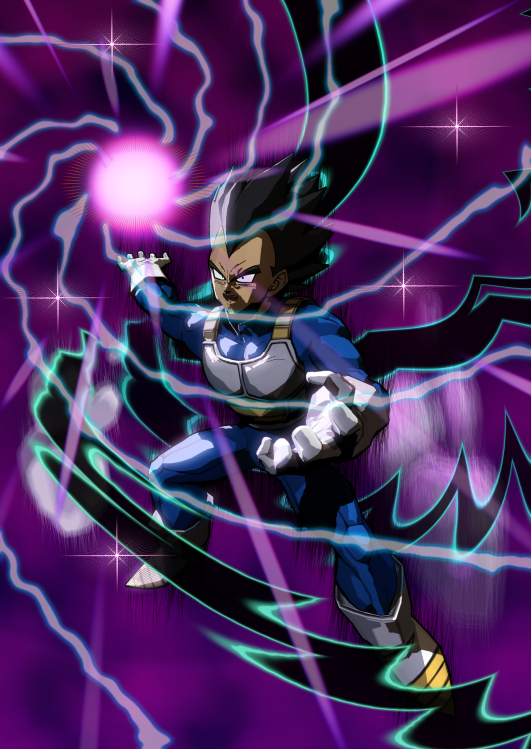

Hello! I'm Chris. I can do game design regarding character design and choices, artworks, as well as management!
Other than doing renders, I enjoy video games and making worlds and stories. I'm starting to learn out CSS and other coding!

It's easier to drag and slide the images. All of these render works have been used by a 3D Program that can be used to take models online to render them and add lighting and other things to make a "poster", or render artwork of sorts.
Here are a couple more realistic renders about Call of Duty, an FPS shooter.
This is a simple picture of how I can go from a semi-finished artwork to one that looks finished and complete to the point to where I'm satisfied about it.
This was one of the works in progresses, but I cut it into bits where it gets more progressed until it's finished to show part of my work progress. I go more in depth in my Artowrk Tab.
I hope you do enjoy some of these artwork renders!